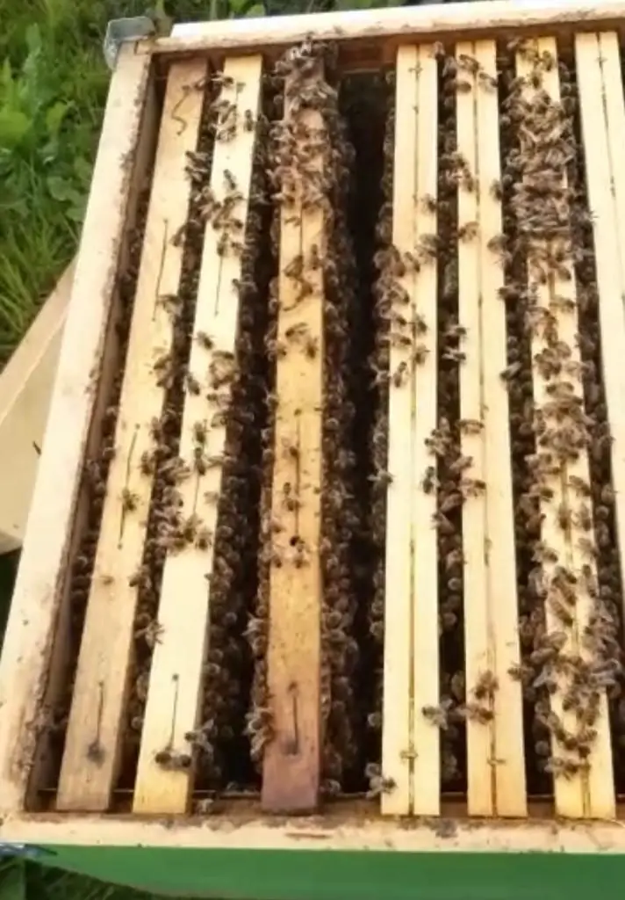

Ape Operaia
50 € / anno- Certificato di adozione digitale in PDF
- Selezione di miele artigianale
Adotta un'arnia
Con l'adozione sostieni un'apicoltura artigianale e la salute delle api del nostro territorio. In cambio ricevi il certificato con il tuo nome e il miele che la tua arnia ha prodotto.

Compila il modulo con il pacchetto e il nome da scrivere sul certificato. La richiesta arriva su WhatsApp a Gabriele.
Gabriele ti ricontatta per confermare i dettagli, ti manda i dati per il pagamento con bonifico o PayPal e poi il certificato di adozione.
A fine stagione ti arriva il miele della tua arnia.
Riporta il nome che scegli tu, anche quello di una persona a cui vuoi regalare l'adozione. Ecco un esempio.
è custode di 60.000 amiche nell'apiario di Gabriele Di Giuseppe a Notaresco.